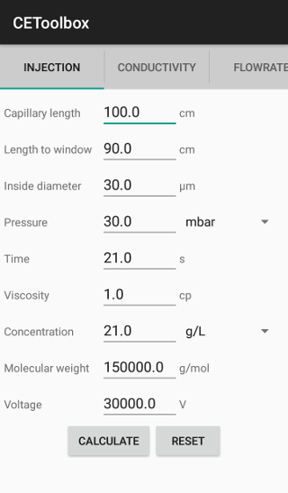
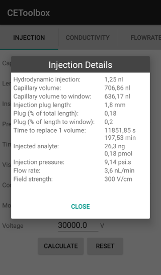

About
The CEToolbox application is a calculator for capillary electrophoresis. It aims to provide several information on the separation of compounds like the hydrodynamic injection, the volume of the capillary, the injection plug length or the quantity of injected analyte. The application works with any type of CE system.
CEToolbox is a free application, developed with Java and released under the Apache License. It run on Android v4.4 or later version. A new version that can run on iOS and with traditional operating systems (GNU/Linux, Mac OS X and Microsoft Windows) is currently under development.
The project, coordinated by Yannis Francois (LSMIS) and Jerome Pansanel (IPHC), is implementing an idea originally proposed by Michael Biacchi during his PhD at LSMIS.
The last stable release can be downloaded by following this link. It is also available on the following Application Store for Android:
- Google Play: https://play.google.com/store/apps/details?id=com.github.cetoolbox
- F-Droid: https://f-droid.org/en/packages/com.github.cetoolbox/
News
- 2024-07-06 CEToolbox 1.6.0 is released
- 2023-08-30 CEToolbox 1.5.0 is released
- 2021-03-29 CEToolbox 1.4.5 is released
- 2020-11-22 CEToolbox 1.4.3 is released
- 2020-09-15 CEToolbox 1.4.2 is released
Citation
As part or the research process, it is important that pieces of software that have contributed to the research are cited. You can cite CEToolbox with the following text:
The CEToolbox software has been used to compute Capillary Electrophoresis parameters. The source code is available on GitHub[1] and archived in Zenodo[2].
A scientific article describing the CEToolbox has also been released in the Electrophoresis journal and can be used as citation:
François, Y.N., Biacchi, M., Gahoual, R., Vezin, A. and Pansanel, J. (2021), CEToolbox: Specialized calculator for capillary electrophoresis users as an android application. ELECTROPHORESIS, 42: 1431-1435. https://doi.org/10.1002/elps.202100036
- Supplementary materials: https://github.com/cetoolbox/cetoolbox
- Pansanel, J., François, Y., Biacchi, M., Gahoual, R., ∧ Vezin, A. (2024), "CEToolbox", v1.6.0, Zenodo,
Screenshot

License
CEToolbox is free software; it is licensed under the Apache License, Version 2.0 (the "License"); you may not use this file except in compliance with the License. You may obtain a copy of the License at http://www.apache.org/licenses/LICENSE-2.0
Unless required by applicable law or agreed to in writing, software distributed under the License is distributed on an "AS IS" BASIS, WITHOUT WARRANTIES OR CONDITIONS OF ANY KIND, either express or implied. See the License for the specific language governing permissions and limitations under the License.